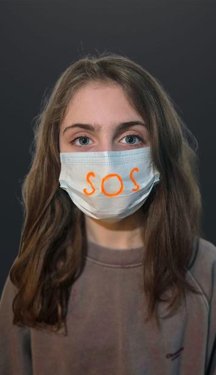
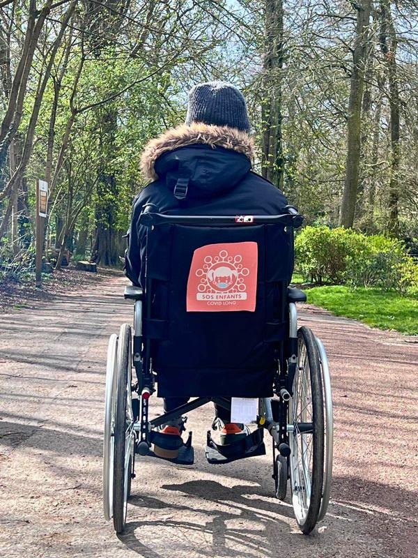

Dossier de presse · Mars 2026
Covid Long Pédiatrique :
 Jeanne · 9 ans
Jeanne · 9 ans
Covid Long Pédiatrique :
Des milliers d'enfants malades.
Une France en retard.
Des drames évitables. Un silence institutionnel. Des familles seules face à la maladie.
SOS Enfants Covid Long appelle à une action urgente.

Emma · 18 ans
Gabriel · 16 ans · fauteuil roulant depuis 2022
Jeanne · 9 ans